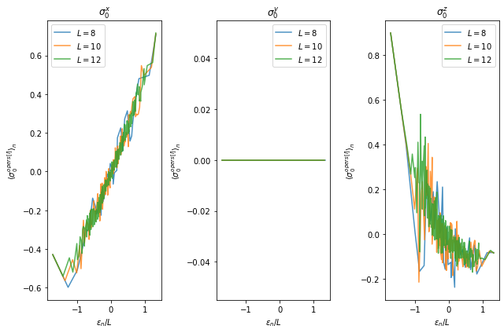

Eigenstate ETH
$\require{physics}$
import numpy as np
import pandas as pd
import matplotlib.pyplot as plt
%matplotlib inline
from ph121c_lxvm import data, models, basis, tensor, measure
Observables in excited states
We are going to measure the expectation values of the Pauli operators in the energy eigenbasis. And we are going to plot them. Same Hamiltonian as last time.
Here we are supposed to use the fact $\ket{\xi}$ from last time is translation invariant, so we’ll restrict to the $k=0$ momentum sector of the Hamiltonian by filtering states in the wrong sector with $\ev{T}{n} \neq 1$.
%%time
hx, hz = (-1.05, 0.5)
bc = 'c'
sizes = [8, 10, 12]#, 14] # kernel crashes at 14: maybe raise stack limit?
opers = ['x', 'y', 'z']
values = {
'Pauli' : [],
'vals' : [],
'L' : [],
'E' : [],
'n' : [],
}
sector = { str(e): [] for e in sizes }
for L in sizes:
job = dict(
oper=models.tfim_z.H_dense,
oper_params={
'L' : L,
'h' : hx,
'hz': hz,
'bc': bc,
},
solver=np.linalg.eigh,
solver_params={},
)
evals, evecs = data.jobs.obtain(**job)
# cyclic permutation by translation operator
perm = np.arange(L)
perm += 1
perm[-1] = 0
# identify vectors in k=0 sector
for i in range(evals.size):
if np.allclose(np.inner(evecs[:, i],
basis.schmidt.permute(evecs[:, i], [], L, perm=perm)
), 1):
sector[str(L)].append(i)
# Now calculate expectation values
for which in opers:
for i in sector[str(L)]:
tevals = np.zeros(2 ** L, dtype='complex')
tevals[i] = 1
cevecs = (tevals * evecs).T.astype('complex')
values['vals'].append(
measure.evolve.Pauli_ev(
L=L, Nstp=1, which=which, cevecs=cevecs, tevals=tevals,
num_threads=4
)
)
values['L'].append(L)
values['n'].append(i)
values['E'].append(evals[i])
values['Pauli'].append(which)
df = pd.DataFrame(values)
CPU times: user 9min 36s, sys: 51.3 s, total: 10min 28s
Wall time: 2min 38s
fig, axes = plt.subplots(1, len(opers))
for i, ax in enumerate(axes):
for L in sizes:
ax.plot(
df[(df.L == L) & (df.Pauli == opers[i])].E.values / L,
df[(df.L == L) & (df.Pauli == opers[i])].vals.values,
label=f'$L={L}$', alpha=0.8
)
ax.set_title(f'$\\sigma_0^{opers[i]}$')
ax.set_xlabel('$\\epsilon_n / L$')
ax.set_ylabel('$\\langle \\sigma_0^{opers[i]} \\rangle_n$')
ax.legend()
fig.set_size_inches(9, 6)
fig.tight_layout()

If I reason too much about these plots, my brain might pop, but we can describe some of what is going on. In the $\sigma^z$ plot, higher energies correspond to less magnetic correlation of the first spin, while near the ground state the first site is much more likely to point up to align with the parallel and interaction terms in the Hamiltonian. As before $\sigma^y$ vanishes, and so $\sigma^x$ remains, and it simply grows with the energy, almost equal and opposite $\sigma^z$, as the higher energy states are aligning with the transverse field.
In general, as a function of $L$, it appears that all the expectation values don’t change with $L$ in this data. I think I can see that the yellow is noisier than the green, so maybe the variance is decreasing as $L$ increases. From ETH behavior, we would expect that larger systems thermalize faster, and that the expectation values become more predictable.
Entropic signature of thermalization
Let’s also get the half-system entanglement entropy of the $k=0$ momentum eigenstates:
entropx = dict(L=[], S=[], E=[], n=[])
for L in sizes:
job = dict(
oper=models.tfim_z.H_dense,
oper_params={
'L' : L,
'h' : hx,
'hz': hz,
'bc': bc,
},
solver=np.linalg.eigh,
solver_params={},
)
evals, evecs = data.jobs.obtain(**job)
for i in sector[str(L)]:
entropx['L'].append(L)
entropx['n'].append(i)
entropx['E'].append(evals[i])
entropx['S'].append(
measure.entropy.entanglement(basis.schmidt.values(
evecs[:, i], np.arange(L // 2), L
))
)
df = pd.DataFrame(entropx)
fig, ax = plt.subplots()
for L in sizes:
ax.plot(df[df.L == L].E.values / L,
df[df.L == L].S.values / L,
label=f'$L={L}$'
)
ax.set_title('Entanglement entropy')
ax.set_xlabel('$\\epsilon_n / L$')
ax.set_ylabel('$S_{L/2} / L$')
ax.legend()
plt.show()
It appears that the entropy is minimized at the band edges and maximized in the center of the spectrum in the $k=0$ momentum sector. Also, the entropy, which we have normalized by the system size no longer appears to depend strongly on $L$, so we have found something more or less scale invariant. I believe this graphic is consistent with our exploration of area law and volume law scaling of the entanglement entropy.